Objectif de la formationFabriquer des pizzas artisanales, de l'élaboration de l'empâtement direct ou semi-direct jusqu'à la présentation du produit fini.
École Pizzaïolo Jean-Jacques Despaux · SIRET 879 955 136 00012 · NAF 8559A
NDA 76 65 00989 65 auprès du préfet de la région Occitanie
101 rue Alsace Lorraine, 65300 Lannemezan · contact@ecole-pizza.com
Version 2.0 Mise à jour le 14/01/2026
Fabriquer des pizzas artisanalesSommaire
Parcours certifiant · RS 7404
Sommaire
1.Préface1
2.Tenue professionnelle2
3.Schéma des formations3
4.L'histoire de la pizza4
5.Les céréales5
Le blé tendre et le blé dur5
6.Le caryopse6
7.Le gluten7
8.L'évolution des moutures8
9.La farine9
9.1 La fabrication de la farine9
9.2 Le sac de farine et le stockage10
9.3 Les types de farine (raffinage)11
9.4 La qualité de la farine12
9.5 L'indice de force de la farine (W)13
10.La levure15
11.L'eau18
12.Le calcul de la température de l'eau20
13.Le sel21
14.L'huile22
15.Les unités de calcul24
16.L'empâtement direct25
17.L'autolyse26
18.Les adjonctions27
19.L'empâtement semi-direct28
20.Les substitutions29
21.Les allergènes30
22.Les matières premières32
23.Les quantités des matières premières34
24.Fiches techniques35
Le pâton35
La Margherita36
Fiche vierge37
25.Les conseils du cuisinier38
26.Le matériel dans une pizzeria41
27.L'organisation en pizzeria43
28.La cuisson de la pizza44
29.Les fours45
30.Les pétrins48
31.Lexique49
32.L'équipe École Pizza52
École Pizzaïolo Jean-Jacques Despaux · Mise à jour le 14/01/2026
Fabriquer des pizzas artisanalesPréface
1
Préface
Tombé amoureux de la cuisine dans mon enfance, j'ai eu de nombreuses
expériences dans le monde de la restauration.
Quand je me convertis au métier de pizzaïolo, je ne me doute pas de la richesse
de ce savoir-faire.
C'est grâce aux championnats du monde de la pizza, puis au Championnat de France,
que ma technique s'est étoffée.
Au travers de mes formations, je partage avec vous mes techniques, mon savoir-faire
et ma passion des bonnes choses.
Jean-Jacques Despaux Maître Artisan Pizzaïolo · Maître Instructeur Pizzaïolo
Président de l'École Pizza
Ce manuel
Ce document est le support pédagogique remis à chaque stagiaire.
Il suit l'ordre de la formation : les matières premières d'abord, le protocole ensuite,
la cuisson et l'organisation pour finir. Les pages « Notes » sont faites pour être
écrites — les valeurs relevées pendant le stage n'ont de valeur que notées.
Fabriquer des pizzas artisanalesTenue professionnelle
2
Tenue professionnelle
La tenue est l'image de l'entreprise. Tout professionnel de la restauration se tient d'avoir une tenue propre.
La tenue est obligatoire
Veste blanche de cuisinier, tee-shirt ou polo
Pantalon de cuisine (jean toléré)
Chaussures de sécurité
Tablier
Torchon
Dans les locaux
Pas de bijoux — l'alliance est tolérée
Interdiction de fumer dans les locaux
Cheveux attachés, ongles courts et sans vernis
Pourquoi c'est une règle et pas un conseil
Une bague retient les résidus de
pâte et se retrouve dans le produit ; une chaussure de ville ne protège pas d'une plaque
sortie du four à 320 °C. La tenue relève de la sécurité au poste autant que de
l'hygiène alimentaire.
Fabriquer des pizzas artisanalesSchéma des formations
3
Schéma des formations
Deux portes d'entrée, puis des approfondissements. Le Niveau I ou le Niveau I Pro sont le prérequis de tout le reste.
Nos formations
Parcours
Durée
Contenu
Prérequis
Niveau I — Pizza classique
5 j · 35 h
Empâtement direct, de la farine à la sortie du four
Aucun
Niveau I — option hygiène
5 j · 44 h
Niveau I + hygiène alimentaire en restauration commerciale
Aucun
Fabriquer des pizzas artisanales
5 j · 35 h
Même contenu que le Niveau I, parcours certifiant RS 7404
Professionnels des métiers de bouche
Niveau I Pro — Pizza classique
2 j · 15 h
Le protocole direct et l'étalage à la main, compactés
Professionnels des métiers de bouche
Niveau II — Empâtements indirects
3 j · 21 h
Poolish, Biga, pizza contemporaine
Niveau I ou Niveau I Pro
Niveau Expert
4 j · 28 h
Indirects + In Teglia et In Pala
Niveau I ou Niveau I Pro
Nos spécialisations
Parcours
Durée
Contenu
Prérequis
In Teglia & In Pala
2 j · 14 h
Pizza sur plaque et sur pelle, vendue à la part
Niveau I ou Niveau I Pro
Pizza napolitaine
5 j · 35 h
Empâtement napolitain, Margherita et Marinara
Niveau I ou Niveau I Pro
Durées
Les durées et les tarifs en vigueur figurent sur le programme officiel
de chaque formation et sur www.ecole-pizza.com. Ce sont eux qui font foi : ce tableau situe
les parcours les uns par rapport aux autres, il ne remplace pas le programme.
Fabriquer des pizzas artisanalesL'histoire de la pizza
4
L'histoire de la pizza
Une pâte à pain garnie, cuite au four. Tout le reste est une affaire de deux mille ans de variations.
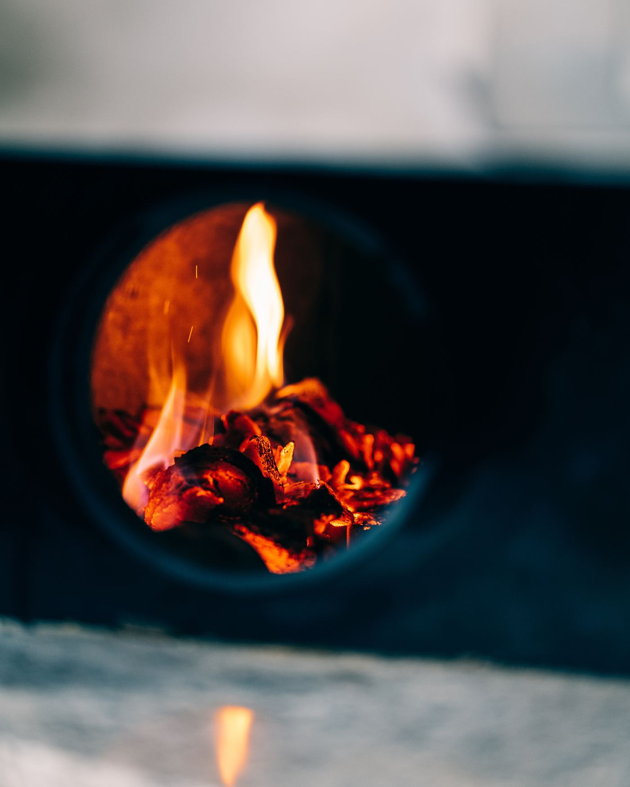
La pizza est une préparation alimentaire qui consiste en une pâte à pain garnie de
différents ingrédients, principalement de la sauce tomate et de la mozzarella, et qui
est cuite au four. Elle est originaire d'Italie et est aujourd'hui très populaire dans
le monde entier.
L'histoire de la pizza remonte à l'Antiquité, où les anciens Romains préparaient déjà
une sorte de pain garni de légumes et d'autres ingrédients. Cependant, la pizza telle que
nous la connaissons aujourd'hui est née en Italie au XVIIIe siècle :
les boulangers italiens préparaient des pains garnis de tomates, d'ail et d'huile d'olive,
cuits au four et vendus dans les rues.
La pizza est devenue très populaire à Naples au XIXe siècle,
et a commencé à se répandre dans le reste du pays puis dans le monde. Au cours du
XXe siècle, elle est devenue un plat international, et de
nombreuses variantes ont été créées, avec des garnitures allant des légumes aux viandes en
passant par les fruits de mer.
Aujourd'hui, la pizza est préparée et consommée dans le monde entier, avec des
ingrédients et des styles de cuisson très variés. Elle est considérée comme l'un des plats
les plus populaires et les plus appréciés de la cuisine internationale.
Cinq ingrédients
Farine, eau, levure, sel — et l'huile d'olive, qui est le
cinquième élément mais n'est pas indispensable. Tout ce manuel tient dans la manière
d'assembler ces cinq-là.
Famille des poacées (les graminées). Elles produisent les grains comestibles que l'on moud en farine.
Les céréales sont de la famille des poacées, sauvages ou cultivées, qui produisent des
grains comestibles utilisés en alimentation humaine et animale, souvent moulus sous forme
de farine raffinée plus ou moins complète.
Céréales contenant du gluten
Blé · Seigle · Orge · Épeautre
Kamut (cousin du blé dur)
Triticale
Avoine (dans certains cas)
Céréales sans gluten
Maïs · Riz · Sorgho
Quinoa · Sarrasin · Millet · Teff
Pois · Fèves · Lupin
L'avoine, un cas à part
L'avoine ne contient pas de gluten au sens strict,
mais elle est presque toujours cultivée, transportée et moulue avec du blé : la
contamination croisée est la règle, pas l'exception. Une farine d'avoine n'est « sans
gluten » que si elle est certifiée comme telle.
Le blé tendre et le blé dur
Le blé tendre et le blé dur diffèrent principalement par la composition de leur
albumen, la partie du grain située entre la coque extérieure et le germe.
Le blé dur a un albumen vitreux contenant une quantité élevée de
protéines et de gluten, ce qui lui donne une texture ferme. Il sert à produire les pâtes
alimentaires, la semoule, le boulgour, le couscous.
Le blé tendre a un albumen qui contient moins de protéines et de
gluten. Sa texture est plus douce : c'est lui qui donne la farine de boulangerie, de
pâtisserie — et de pizza.
Ce que le broyage sépare
Au broyage
Blé dur
Blé tendre
Taille des particules
150 à 500 µm
30 à 200 µm
Granulométrie
Grosses particules
Particules plus fines
Destination
Pasta — pâtes, semoule, couscous
Panification — pain, pizza, pâtisserie
µm = micromètre, unité de mesure mille fois plus petite qu'un millimètre.
Trois parties, trois destins : l'amande devient farine, les enveloppes deviennent son, le germe part avec les issues.
Partie du grain
Ce qu'elle contient
Part du grain
Albumen ou amande
Albumen amylacé (l'amidon), assise protéique. C'est ce qui devient la farine.
82 à 85 %
Péricarpe (le son)
Épicarpe, mésocarpe, endocarpe, testa, bande hyaline, couche à aleurone. Riche en fibres et en minéraux.
13 à 15 %
Embryon ou germe
Scutellum, axe embryonnaire. Riche en lipides — c'est ce qui fait rancir une farine complète.
≈ 3 %
Pourquoi le germe part
Le germe est gras. Laissé dans la farine, il la fait
rancir en quelques semaines. C'est la raison pour laquelle une farine blanche se garde
longtemps et une farine complète beaucoup moins : la conservation est le prix du
raffinage.
Ce n'est pas un ingrédient : c'est un réseau qui se construit sous vos mains, pendant le pétrissage.
Le gluten est un mélange de protéines qui, combiné avec l'eau et une source d'énergie,
forme des ponts disulfures créant le réseau de gluten. Il constitue
environ 80 % des protéines contenues dans le blé et se compose en
majorité de gliadine et de gluténine.
Lorsqu'une farine de blé est mélangée à de l'eau, le pétrissage fusionne ces deux
protéines et crée un réseau élastique et extensible qui retient les bulles de dioxyde de
carbone issues de la dégradation des sucres par les levures. C'est ce phénomène qui
provoque la levée de la pâte et l'aération de la mie.
Ce que permet le réseau
Retenir le gaz carbonique produit par les levures pendant la fermentation
Former de fines alvéoles dans la mie
Prendre du volume durant la cuisson
Donner de l'élasticité à la pâte
Retenir l'eau dans la pâte
Le geste qui change tout
Si la pâte est mélangée à vitesse rapide, le réseau
de gluten sera plus important. C'est le levier le plus direct dont vous disposez au pétrin —
avant même la farine.
On appelle farines panifiables celles qui, comme le blé, contiennent
suffisamment de gluten pour que la pâte lève. Sans gluten, une pâte est beaucoup plus
cassante et friable : elle ne se lie pas.
Terminologie à unifier
Les manuels d'origine emploient indifféremment
« maille glutamique », « maille glutineuse » et « réseau gluténique », et écrivent parfois
glutamine au lieu de gluténine. Trois mots pour une seule chose, et une
protéine mal nommée. Ce manuel retient gluténine et réseau
gluténique partout. ⚑ à valider — Jean-Jacques
Fabriquer des pizzas artisanalesL'évolution des moutures
8
L'évolution des moutures
De la pierre au cylindre : à chaque progrès technique, une farine plus régulière.
Égypte antique
La mouture se fait manuellement, en écrasant les grains entre des pierres ou dans des
mortiers. Méthode très longue, peu efficace, et qui ne donne pas une farine de qualité
constante.
Au Moyen Âge
Apparition des moulins à eau et à vent. Plus rapides et plus efficaces que la mouture
manuelle, ils restent limités par la puissance de l'eau et du vent.
Au XIXe siècle
L'invention du moulin à cylindres permet d'obtenir une farine de
qualité supérieure, plus rapidement. C'est la révolution de la meunerie moderne.
Aujourd'hui
Les moulins modernes combinent broyeurs à cylindres, tamiseurs et équipements de
tri pour produire des farines de qualités différentes, calibrées selon les besoins.
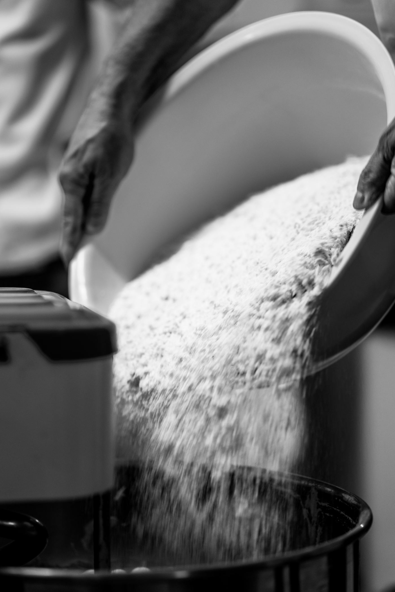
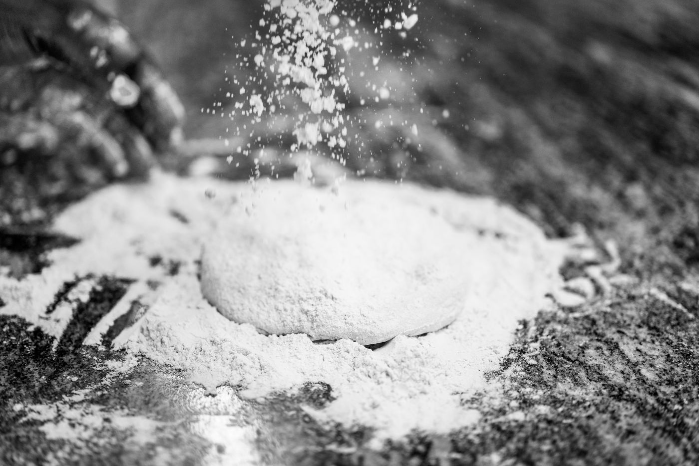
La régularité d'une farine industrielle est ce qui rend un protocole reproductible d'un jour à l'autre.
Poudre obtenue après mouture des grains de céréales. Cinq sous-chapitres : comment elle est faite, comment elle est vendue, comment elle est classée, ce qui fait sa qualité, et l'indice qui la résume.
9.1 · La fabrication de la farine
Réception
Contrôle du blé à l'arrivée au moulin.
Stockage
En silo, au sec et ventilé.
Nettoyage
Élimination des impuretés, des pierres, des grains cassés.
Préparation
Conditionnement du grain avant broyage (humidification contrôlée).
Mouture
Broyage à cylindres et tamisage successifs. En sortent le son, les farines et les gruaux.
Le taux d'extraction
Pour 100 kg de blé, la quantité moyenne de farine que l'on cherche
le plus souvent à obtenir est de 75 kg. Il y a environ
2 % de perte, et les 23 % restants forment
ce que la meunerie appelle les « issues ».
Blé entrant100 kg
Farine75 kg
Issues23 kg
Pertes2 kg
La farine la plus blanche est faite essentiellement avec l'amande du grain. Elle est très
pure parce que son taux de cendres — la quantité de débris minéraux encore
mélangés — est très faible.
La loi européenne prévoit que le sac porte ces cinq informations
obligatoires :
La DLUO (date limite d'utilisation optimale)
Le type (raffinage)
Le nom du moulin ou du producteur
Le taux d'humidité — 15,5 % maximum
Le poids
b. Conditions de stockage
Un local sec et ventilé, à 16 °C maximum
Stocker les sacs sur palette pour laisser passer l'air et éviter que la farine ne se prenne en blocs
Une protection contre les rongeurs et les insectes
Un exemple de code couleur — 5 Stagioni
Le W ne figure pas sur les sacs : certains moulins le signalent par la couleur du
conditionnement. Chez 5 Stagioni, sur la gamme Farina di grano :
Force
Couleur du sac
Force
Couleur du sac
W 200
Bleu clair
W 330
Bleu foncé
W 250
Vert
W 390
Rouge
W 300
Napoletana
W 420
Marron
Gamme Biologica
Force
Biologica
W 250
Biologica integrale
W 330
Un repère de marque, pas une norme
Ce code couleur appartient à un seul
meunier et peut changer d'une gamme à l'autre. Vérifier la fiche technique du moulin avant
de s'y fier. ⚑ gamme en cours à confirmer
C'est en fonction du poids de cendres contenu dans 100 g de matières
sèches que l'on désigne les grands types de farine. Les cendres sont des matières
minérales, principalement contenues dans le son. Il existe six types en
France et cinq en Italie.
Le raffinage et les types — France / Italie
Type France
Tipo Italie
Taux de cendres
Taux d'extraction
Utilisation
T45
—
0,50 moyen
67
Pizza, pâtisserie
T55
00
0,50 à 0,60
75
Pizza, pains blancs
T65
0
0,62 à 0,75
78
Pizza, baguette de tradition, pains spéciaux
T80
1
0,75 à 0,90
80 – 85
Pains semi-complets
T110
2
1,00 à 1,20
85 – 90
Pains complets
T150
Integrale
plus de 1,40
92 – 98
Pains complets ou autres
Comment lire ce tableau
De haut en bas, la farine devient plus complète :
plus de cendres, plus de son, plus de fibres. Conséquence directe au pétrin : elle
boit davantage d'eau, la fermentation ralentit, et la
pâte est plus dense. Descendre d'une ligne, c'est ajouter de l'eau et du
temps.
La farine est une poudre obtenue après mouture de grains de céréales.
Sa qualité — c'est-à-dire son W — dépend de la qualité de ses
protéines.
Le climat①
La nature du sol②
La qualité de la semence③
Les trois facteurs dont dépend la qualité de la farine, en amont du moulin.
Deux familles de protéines
Famille
Protéines
Rôle
Solubles
Globuline et albumine (≈ 15 %)
Ne participent pas au réseau.
Non solubles
Gliadine et gluténine
Forment le réseau gluténique au contact de l'eau.
La règle
Plus la farine est riche en protéines, plus le réseau gluténique
sera fort, et plus le W sera élevé. C'est toute la logique du chapitre
suivant.
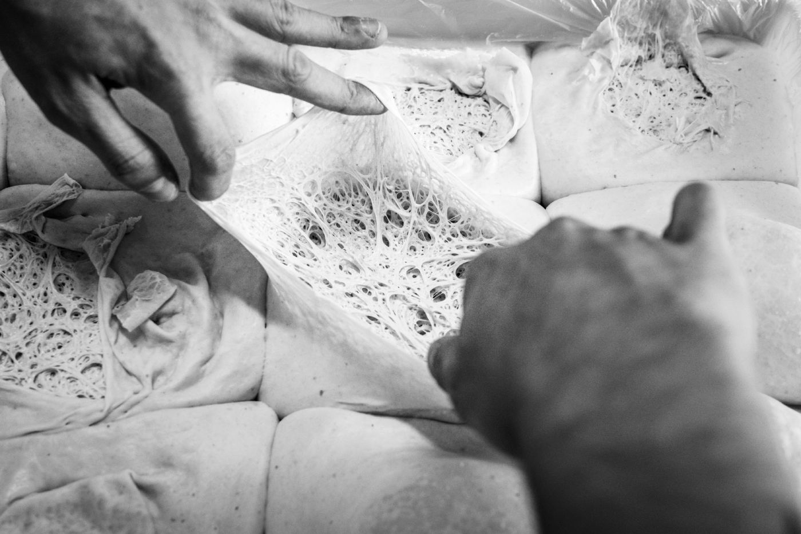
Ce que cela change au poste
Une farine faible en protéines donne une pâte qui s'étale sans résister, mais qui ne
tient pas une longue maturation : elle se relâche, le pâton s'affaisse.
Une farine forte tient plusieurs jours au froid mais résiste à l'étalage tant qu'elle
n'a pas eu le temps de se détendre. Elle demande de l'anticipation.
Le W est l'indice de qualité de la farine. Il ne figure pas sur
les sacs. Il est calculé en laboratoire par des appareils spéciaux, dont
l'alvéographe de Chopin, qui mesure l'extensibilité et la ténacité de la
pâte.
À quoi sert quelle force
Indice W
Usage
W 120 – 150
Biscuits et crackers
W 200 – 250
Pizzas faites avec des empâtements directs à levage court
W 250 – 310
Pizzas napolitaines
W 330 – 390
Pizzas faites avec des empâtements directs à levage long et indirects
W 400 – 430
Farines de force dites Manitoba, qui servent à renforcer des farines plus faibles
Le repère qui compte
Le seuil pratique à retenir est W 330 :
en dessous, la farine ne tient pas une pré-fermentation de 16 à 20 heures (Biga) ni une
maturation longue. C'est la frontière entre le Niveau I et le Niveau II.
L'alvéographe insuffle de l'air dans un disque de pâte jusqu'à le faire éclater, et trace
la courbe de la résistance. Cinq symboles s'en déduisent :
Symbole
Signification
P — Pression
Mesure la ténacité, la fermeté de la pâte et sa résistance à la déformation.
G — Gonflement
Correspond à la quantité d'air insufflée à la pâte jusqu'à son éclatement.
L — Largeur
Longueur du graphique : il représente l'extensibilité de la courbe et indique l'élasticité de la pâte et l'allongement au façonnage.
W — Work (travail)
Mesure le travail nécessaire pour déformer le pâton jusqu'à son éclatement. On parle aussi de force boulangère.
P/L
Rapport qui traduit l'équilibre — ou le déséquilibre — entre la ténacité et l'extensibilité.
Le P/L, l'indice qu'on oublie
Deux farines de même W peuvent se comporter à
l'opposé l'une de l'autre. Un P/L élevé donne une pâte tenace qui revient sous les doigts ;
un P/L bas, une pâte molle qui se déchire. Pour la pizza, on cherche un P/L compris entre
0,50 et 0,70 — c'est d'ailleurs ce qu'imposent les cahiers des charges
napolitains.
Un champignon microscopique, Saccharomyces cerevisiae. Il mange le sucre de la farine et rend du gaz et de l'alcool.
La levure est un micro-organisme très répandu dans la nature. La production de levure
industrielle pour la panification a commencé au début du siècle dernier. En panification,
on utilise la variété Saccharomyces cerevisiae — la levure de bière, ou de
boulanger.
Elle a la particularité d'utiliser les sucres simples pour deux raisons : elle
s'en nourrit, et elle possède la propriété de transformer les sucres naturellement
présents dans la farine en dioxyde de carbone et en
alcool. Cette transformation se nomme la
fermentation alcoolique.
Quatre types de levure en pizzeria
Type
Particularité
Levure fraîche
La référence de l'école. Se conserve au froid, s'émiette.
Levure sèche active
À réhydrater. L'eau doit être à 38 °C — ne jamais dépasser 50 °C, la levure meurt.
Levure sèche instantanée
S'incorpore directement à la farine. Dosage divisé par deux.
Levain
Écosystème microbien naturel, liquide ou solide. Demande un entretien quotidien.
La température tue
Délayée dans de l'eau froide, la levure
voit son action ralentie. Dans de l'eau tiède (au-dessus de 40 °C),
elle est affaiblie. Dans de l'eau chaude (au-dessus de 50 °C), elle
est détruite. Un empâtement qui ne lève pas commence presque toujours par
là.
Elle assure la levée de la pâte par sa production de dioxyde de carbone, donc la légèreté et l'alvéolage du produit fini
Elle contribue à la formation des arômes par la production d'alcool
Avec ou sans air
Mode de vie
Ce qui se passe
Vie aérobie
En présence d'air, la levure respire : l'énergie utilisée lui permet de se reproduire.
Vie anaérobie
En l'absence d'air, elle puise son énergie dans la fermentation des sucres, qu'elle transforme en alcool. C'est cette fonction qui est utilisée en fabrication industrielle.
La reproduction
La cellule de levure se reproduit par bourgeonnement d'une cellule mère : en une
heure environ, elle en produit une autre parfaitement identique.
1 g de levure fraîche = 10 milliards de cellules.
Trop de levure
Une dose de levure excessivement élevée ne permet pas de
respecter les étapes de la panification. Elle conduit à une pâte à pizza peu savoureuse et
à un rassissement très rapide. Le goût vient du temps, pas de la levure.
La dose de levure varie en fonction des techniques de fermentation
(directe, indirecte), des modes de pétrissage, et des conditions
de température et d'hygrométrie environnantes.
Fraîche2 – 4 g / kg
Sèche active2 – 4 g / kg
Sèche instantanée1 – 2 g / kg
Doses maximales admises par kilo de farine, selon les saisons.
Dose par kilo de farine, selon la température de la farine
Température de la farine
Levure fraîche
Sèche active à réhydrater
Sèche instantanée
10 à 16 °C
4 g
4 g
2 g
16,1 à 21 °C
3,5 g
3,5 g
1,75 g
21,1 à 26 °C
3 g
3 g
1,5 g
26,1 à 31 °C
2,5 g
2,5 g
1,25 g
31,1 à 36 °C
2 g
2 g
1 g
Lire le tableau à l'envers
Plus la farine est chaude, moins
on met de levure : la chaleur fait déjà le travail. C'est la même logique que le calcul
de la température de l'eau (chapitre suivant) — on compense la saison, on ne la subit pas.
Incorporation
La levure peut être émiettée dans la farine en début de pétrissage, ou
délayée dans l'eau de coulage si la température de celle-ci est modérée.
La levure fraîche a son action optimale pour une pâte dont la température se situe entre
21 et 27 °C suivant la saison.
L'eau servant au pétrissage se nomme eau de coulage. Trois choses comptent : sa qualité, sa quantité, sa température.
Ce que fait l'eau de coulage
Elle hydrate la farine
Elle dissout le sel et la levure
Elle permet au gluten de se former en réseau
Elle est indispensable au développement de la fermentation et aux actions enzymatiques
Les critères de l'eau
L'eau doit être potable — critères organiques, chimiques et
bactériologiques conseillés par l'Organisation mondiale de la santé.
Critère
Exigence
Organique
Incolore, limpide, inodore, sans goût.
Chimique
Lorsqu'elle contient des sels de calcium ou de magnésium (craie, chaux, plâtre), on dit que l'eau est calcaire ou séléniteuse.
La dureté
La dureté est la conséquence de la présence de sels minéraux. Elle se mesure en
degré français (°f ou °fH — à ne pas confondre avec °F, le degré
Fahrenheit). Un degré français correspond à 4 mg de calcium ou 2,4 mg de magnésium
par litre d'eau.
Titre hydrotimétrique
Qualification
Effet sur la pâte
0 à 7 °f
Eau très douce
Pâte collante. Probabilité d'apparition de bulles à la cuisson.
7 à 15 °f
Eau douce
Pâte collante ; on peut ajouter un peu de sel.
15 à 30 °f
Eau plutôt dure
Idéale pour la pâte.
30 à 40 °f
Eau dure
Pâte dure et peu levée ; utiliser un adoucisseur.
plus de 40 °f
Eau très dure
Pâte dure et peu levée ; adoucisseur nécessaire.
Deux versions dans le manuel d'origine
Le texte annonçait « douce jusqu'à
5 ° », « moyennement dure entre 15 et 30 ° » et « dure : plus de 20 ° » —
trois seuils qui se chevauchent et qui ne correspondent pas au tableau ci-dessus. C'est le
tableau qui a été retenu ici, parce qu'il est cohérent de bout en bout.
⚑ à confirmer — Jean-Jacques
On peut ajouter un peu de sel en plus dans la pâte.
Eau dure
On doit utiliser un adoucisseur.
Le taux d'hydratation
C'est la quantité d'eau nécessaire pour hydrater le kilo de farine, par rapport à sa
force. Le taux minimum d'hydratation est de 54 %, jusqu'à
60 % avec un empâtement direct. Il est toujours possible de rajouter
de l'eau si l'on substitue une partie de la farine de base par une autre — farine complète,
semi-complète, soja, châtaigne, seigle, orge, mix.
Hydratation minimale selon la force
Force de la farine
Hydratation minimale
Eau pour 1 kg de farine
W 200
54 %
540 g
W 250
55 %
550 g
W 300
56 %
560 g
W 330
57 %
570 g
W 390
59 %
590 g
W 420
60 %
600 g
Gardez toujours un verre d'eau
Sur chaque protocole de ce manuel, une
consigne revient : garder toujours un verre d'eau pour le bassinage. Le
tableau donne un point de départ, pas une vérité : la farine du jour, l'hygrométrie du
labo et la substitution éventuelle décalent toujours un peu le résultat. Les deux ou trois
derniers pourcents se versent à la main, en regardant la pâte.
Fabriquer des pizzas artisanalesLe calcul de la température de l'eau
12
Le calcul de la température de l'eau
La température de base : un chiffre de référence qui garantit une pâte régulière, été comme hiver.
La température de base est un chiffre de référence utilisé dans une
formule de calcul, afin d'obtenir une température optimale en fin de pétrissage — gage de
régularité dans le déroulement de l'activité fermentaire et du travail de la pâte.
Après plusieurs années d'expérience, nous appliquons une formule simple et efficace,
dite TB 50 :
Température de la farine × 2 = Y 50 − Y = température de l'eau de coulage
La formule appliquée aux trois saisons
Saison
T° farine
× 2 = Y
TB − Y
Eau de coulage
T° de la pâte visée
Été
24 °C
48
50 − 48
2 °C
22 à 24 °C
Printemps / automne
17 °C
34
50 − 34
16 °C
22 à 25 °C
Hiver
10 °C
20
50 − 20
30 °C
22 à 27 °C
Le cas extrême de l'été
Saison
T° farine
× 2 = Y
TB − Y
Eau de coulage
Été caniculaire
28 °C
56
50 − 56
− 6 °C
Une eau à −6 °C n'existe pas
Le calcul ne se trompe pas : il vous dit
que vous êtes déjà en retard. Anticipez pour minimiser les risques :
mettez la veille une partie ou la totalité de la farine au frais. Descendre la farine de
28 à 20 °C ramène l'eau de coulage à 10 °C, une valeur atteignable.
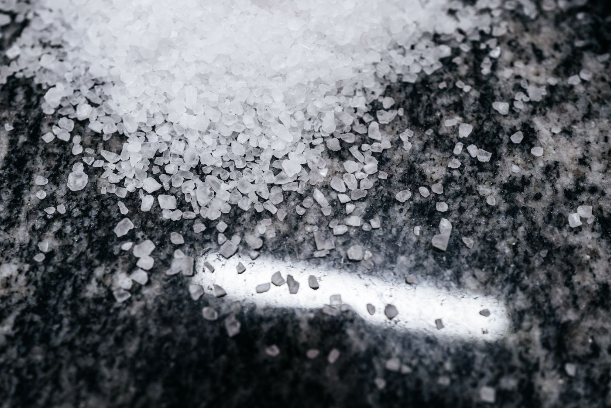
L'eau se pèse : 1 litre = 1 kilo. La balance est plus fiable que le pichet gradué.
Il freine la fermentation, resserre le réseau, colore la croûte et fait le goût. Quatre effets pour un seul ingrédient.
Le sel gemme est extrait des mines ou des carrières provenant de
dépôts géologiques ; le sel marin est recueilli par évaporation de
l'eau de mer dans les marais salants.
Rôle du sel en panification
Il freine et régularise la fermentation
Il contribue à la fixation de l'eau et améliore la rétention gazeuse
Il participe à la bonne coloration de la croûte et à son croustillant
Il améliore la saveur du produit fini
Il retarde l'oxydation de la pâte, qui reste blanche
Sur le réseau gluténique
Le sel améliore les qualités plastiques de la pâte en renforçant sa ténacité, son
élasticité et sa maniabilité : il renforce le réseau gluténique, la
gliadine devenant moins soluble. Dans l'eau salée il se forme une plus grande quantité de
gluten, avec des fibres plus courtes liées entre elles par attraction électrostatique.
Deux propriétés à connaître
Propriété
Effet
Antiseptique
Positif — il brûle les micro-organismes responsables du développement des moisissures. Négatif — il brûle aussi les cellules de levure et diminue le développement de l'anhydride carbonique.
Hygroscopique
Il augmente la densité de la pâte : on peut l'hydrater davantage sans la rendre collante. Il améliore la conservation de la pâte et retarde sa dessiccation.
Dose usuelle17 – 22 g / kg de farine
Jamais avec la levure
Le sel se verse petit à petit, en fin de
pétrissage, et jamais en contact direct avec la levure : mis ensemble dans
l'eau, il en tue une partie avant même le démarrage.
Le cinquième élément — celui dont on peut se passer, et dont la napolitaine se passe.
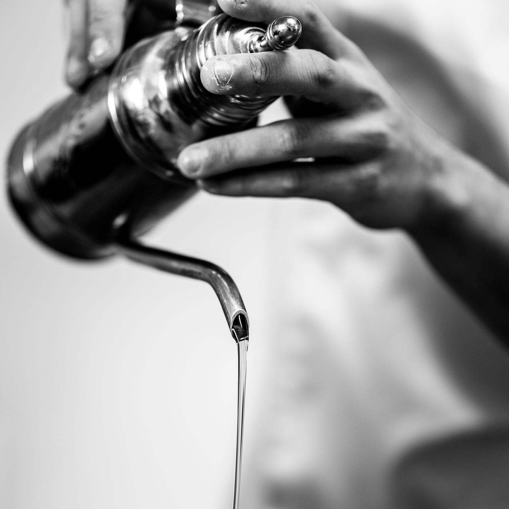
L'huile d'olive est le cinquième élément des ingrédients d'une pâte à pizza,
mais elle n'est pas indispensable.
Dans la pâte, elle permet de figer le pâton durant sa maturation en
chambre froide et évite qu'il ne s'affaisse. Elle a pour fonction de
lubrifier la pâte et de lui donner un peu de souplesse et d'élasticité.
Elle intervient surtout sur l'empâtement direct, afin de maintenir les
pâtons en forme et bien ronds pendant un temps de maturation de 1 à 5 jours.
La napolitaine, sans huile
La « Pizza Napolitaine », reconnue par le patrimoine
mondial de l'UNESCO, ne contient pas d'huile d'olive dans la pâte. La pâte
napolitaine est faite pour être utilisée très rapidement, sans maturation longue : elle
n'a pas besoin d'être figée. L'huile arrive sur la garniture, pas dans l'empâtement.
Une huile de pétrissage n'a pas besoin d'être exceptionnelle :
elle sera chauffée à 320 °C et ses arômes disparaîtront. Une huile vierge fait
l'affaire.
Une huile de finition, versée à la sortie du four, est goûtée telle
quelle : c'est là que l'extra vierge se justifie, et c'est le seul endroit où le
client la perçoit.
Fabriquer des pizzas artisanalesLes unités de calcul
15
Les unités de calcul
Une unité = 1 kg de farine. Tout le reste s'en déduit, et se multiplie.
L'unité de calcul de l'empâtement direct
Ingrédient
1 kg
3 kg
10 kg
Farine de blé
1 kg
3 kg
10 kg
Eau, suivant le W de la farine
W 200 — 54 %
540 g
· · · · · ·
· · · · · ·
W 250 — 55 %
550 g
· · · · · ·
· · · · · ·
W 300 — 56 %
560 g
· · · · · ·
· · · · · ·
W 330 — 57 %
570 g
· · · · · ·
· · · · · ·
W 390 — 59 %
590 g
· · · · · ·
· · · · · ·
W 420 — 60 %
600 g
· · · · · ·
· · · · · ·
Les autres ingrédients
Huile
25 g
· · · · · ·
· · · · · ·
Sel
20 g
· · · · · ·
· · · · · ·
Levure
Fraîche
2 à 4 g
· · · · · ·
· · · · · ·
Sèche active
2 à 4 g
· · · · · ·
· · · · · ·
Sèche instantanée
1 à 2 g
· · · · · ·
· · · · · ·
Facultatif
Miel
0,6 g
· · · · · ·
· · · · · ·
Sucre, malt
1,8 g
· · · · · ·
· · · · · ·
1 unité de calcul6 pâtons de 280 g
10 unités de calcul… pâtons de 280 g
À compléter pendant le stage
Les colonnes 3 kg et 10 kg sont
volontairement laissées vides : c'est l'exercice. Une unité de calcul donne environ
1,68 kg de pâte, soit six pâtons de 280 g — à vous de trouver
combien en donnent dix.
Fabriquer des pizzas artisanalesL'empâtement direct
16
L'empâtement direct
Tous les ingrédients en une seule fois. Au pétrin à spirale, de 10 à 30 litres.
Hydratation54 – 60 %
T° pâte finale≤ 25 °C
Pétrissage≈ 15 mn
Première phase
Mettre la farine et la levure, laisser tourner 1 mn
— c'est le temps d'oxygénation.
Deuxième phase
Verser l'eau d'un coup — garder toujours un verre d'eau pour le
bassinage. Pétrir 12 mn en petite vitesse.
Troisième phase
Verser le sel petit à petit tout en laissant tourner le pétrin ;
au bout d'1 mn, verser l'huile d'olive. Pétrir encore
2 à 3 mn.
La pâte est finie. Prendre la température et vérifier la texture :
elle doit être homogène et souple, et ne pas dépasser les degrés imposés.
10 à 40 mnPointage — sur le marbre, en un gros pâton, avec un rabat, couvert d'un film plastique.
5 mnDétente — la pâte se relâche avant d'être divisée.
Division et boulage
Étaler la masse en forme rectangulaire, d'une épaisseur de 10 cm.
Diviser, peser, bouler et déposer dans des bacs Gilac 60 × 40 cm.
Bloquer à 3 à 4 °C.
Temps de pointage suivant la saison
Saison
Temps de pointage
Été chaud et humide
10 à 15 mn
Printemps / automne
15 à 30 mn
Hiver
20 à 40 mn
Prendre la température, vraiment
C'est le seul contrôle objectif de tout le
protocole. Une pâte à 27 °C au lieu de 24 fermentera trop vite et sera ingérable le
lendemain — et rien dans son aspect ne le dira au moment où elle sort du pétrin.
Farine et eau seules, un repos, puis le reste. Une méthode qui donne une pâte plus extensible.
Hydratation 1re phase57 %
Repos40 mn
Bassinage2 – 3 %
Première phase — l'autolyse
Verser la totalité de la farine et de l'eau de coulage à hauteur de
57 % d'hydratation. Pétrir 3 mn environ, afin
d'obtenir une pâte non homogène.
40 mnÀ température ambiante. C'est ici que les enzymes travaillent, sans levure ni sel.
Deuxième phase
Pétrir à nouveau 7 mn environ en ajoutant la levure
au début — garder toujours un verre d'eau pour le bassinage.
Troisième phase
Verser le sel petit à petit puis l'huile tout en
laissant tourner. Pétrir environ 2 à 3 mn.
Quatrième phase — le bassinage
Corriger la texture par bassinage : verser 2 à 3 % d'eau par
petits filets, afin d'obtenir une pâte souple et extensible.
10 à 40 mnPointage — sur le marbre, un rabat, couvert d'un film plastique.
5 mnDétente — la pâte se relâche avant d'être divisée.
Division et boulage
Étaler la masse en forme rectangulaire, d'une épaisseur de 10 cm.
Diviser, peser, bouler et déposer dans des bacs Gilac 60 × 40 cm.
Bloquer à 3 à 4 °C.
Temps de pointage suivant la saison
Saison
Temps de pointage
Été chaud et humide
10 à 15 mn
Printemps / automne
15 à 30 mn
Hiver
20 à 40 mn
Ce que l'autolyse achète
Un repos sans levure et sans sel laisse les enzymes de
la farine amorcer seules le réseau. La pâte devient plus extensible :
elle s'étale sans revenir. C'est le geste qui règle le plus souvent un problème d'étalage,
avant même de changer de farine.
Un produit ajouté à la pâte pendant le pétrissage. Toujours calculé sur le poids de la farine.
Pourcentage recommandé sur la quantité de farine
Adjonction
Pourcentage
À quel moment ?
Complément d'eau
Graines torréfiées
3 à 6 %
Avant le sel (10 mn)
Eau de bassinage
Pâte fermentée
10 à 30 %
À la 8e minute
Eau de bassinage
Naturkraft (levain déshydraté)
4 %
Avec la farine
Eau de bassinage
Son
1 %
Après l'huile (12 mn)
Eau de bassinage
Charbon végétal
1 à 2 %
Avec la farine
Eau de bassinage
Le listing des adjonctions
Graines torréfiées
Pâte fermentée
Levain naturel
Naturkraft (levain déshydraté)
Son
Charbon végétal
Une adjonction assèche
Graines, son et charbon boivent.
Le complément se fait toujours à l'eau de bassinage, en fin de pétrissage,
et jamais en augmentant l'eau de coulage du départ : on ajusterait à l'aveugle une pâte
qui n'a pas encore montré sa texture.
Fabriquer des pizzas artisanalesL'empâtement semi-direct
19
L'empâtement semi-direct
Un direct auquel on ajoute de la pâte fermentée. Le raccourci vers les arômes de l'indirect.
Pâte fermentée10 – 30 %
Ajout8eminute
T° pâte finale≤ 25 °C
Première phase
Mettre la farine et la levure, laisser tourner 1 mn
(temps d'oxygénation).
Deuxième phase
Verser l'eau d'un coup — garder toujours un verre d'eau pour le
bassinage. Pétrir 8 mn en petite vitesse, ajouter la
pâte fermentée, puis terminer le pétrissage pendant
4 mn.
Troisième phase
Verser le sel petit à petit ; au bout d'1 mn,
verser l'huile d'olive. Pétrir environ 2 à 3 mn.
Prendre la température et vérifier la texture : homogène, souple, sans dépasser
les degrés imposés.
10 à 40 mnPointage — sur le marbre, un rabat, couvert d'un film plastique.
5 mnDétente — la pâte se relâche avant d'être divisée.
Division et boulage
Étaler la masse en forme rectangulaire, d'une épaisseur de 10 cm.
Diviser, peser, bouler et déposer dans des bacs Gilac 60 × 40 cm.
Bloquer à 3 à 4 °C.
Temps de pointage suivant la saison
Saison
Temps de pointage
Été chaud et humide
10 à 15 mn
Printemps / automne
15 à 30 mn
Hiver
20 à 40 mn
Qu'est-ce que la pâte fermentée
C'est un empâtement, direct ou indirect, qu'on a
laissé fermenter 24 heures à température ambiante, ou 2 à 5 jours
en chambre froide. Autrement dit : un reste de la veille, utilisé comme
ferment. Rien ne se jette.
Remplacer une part de la farine de blé par une autre farine — en respectant le poids total, et en compensant l'eau.
La substitution, c'est le remplacement d'une partie du poids de la farine initiale de blé
par une ou plusieurs autres farines : complète, semi-complète, soja, châtaigne, seigle,
orge, mix. Le poids initial de farine ne change pas — seule sa composition
change.
Poids d'eau pour 1 kg de farine(s)
Force W
Hydratation minimale
Eau
Soja / semi-complète 10 % complément
Total eau
Farine complète 10 % complément
Total eau
W 200
54 %
540 g
+ 30 g
570 g
+ 40 g
580 g
W 250
55 %
550 g
+ 30 g
580 g
+ 40 g
590 g
W 300
56 %
560 g
+ 30 g
590 g
+ 40 g
600 g
W 330
57 %
570 g
+ 30 g
600 g
+ 40 g
610 g
W 390
59 %
590 g
+ 30 g
620 g
+ 40 g
630 g
W 420
60 %
600 g
+ 30 g
630 g
+ 40 g
640 g
Exemple — 10 unités en W 330, dont 10 % de soja
9 kg de farine de blé + 1 kg de farine de soja
Eau de base : 570 g × 10 = 5,700 kg
Complément : 30 g × 10 unités = 0,300 kg
Eau totale = 6 kg
Certaines farines assèchent
Vous devez réagir : il sera toujours possible
d'ajouter un peu d'eau de bassinage en fin de pétrissage pour retrouver une
texture homogène avec une bonne élasticité. Le tableau donne le complément
attendu ; la pâte donne le complément réel.
L'information sur les allergènes est obligatoire en restauration. Ce n'est pas une bonne pratique : c'est la loi.
Cadre réglementaire
Règlement (UE) n° 1169/2011 — Décret n° 2015-447
du 17 avril 2015. Les professionnels doivent mettre à disposition du consommateur la liste
des allergènes présents dans les plats.
Les 14 allergènes majeurs
Conformément à la réglementation, les allergènes ci-dessous incluent toute présence
directe ou sous forme de produits dérivés. Il faut vérifier l'étiquetage
des produits utilisés.
Le professionnel doit mettre à disposition un document écrit, clair et
accessible. Un affichage doit informer le client de la disponibilité de ces
informations. Par exemple :
Formulation type
« La liste des allergènes présents dans
nos plats est disponible sur demande. »
L'information peut être donnée sur : carte — tableau
— classeur — support numérique.
Bonnes pratiques
Fiches recettes avec allergènes
Formation des équipes
Vérification des fournisseurs
Mise à jour régulière
Points de vigilance
Information fiable et à jour
Tous les plats concernés
Personnel formé
Attention aux contaminations croisées
Exemple — tableau des allergènes sur trois pizzas
Allergène
Reine
Calzone
Océane
Gluten
✕
✕
✕
Crustacés
Œufs
✕
Poissons
✕
Arachides
Soja
Lait
✕
✕
✕
Fruits à coque
Céleri
Moutarde
Sésame
Lupin
Mollusques
Sulfites
Le céleri de la sauce tomate
Le tableau d'origine ne cochait pas le céleri,
alors que le chapitre précédent le donne en exemple pour la sauce tomate. Selon la marque de
pulpe employée, la ligne « Céleri » doit être cochée sur toutes les pizzas à base tomate.
⚑ à trancher selon le fournisseur
Fabriquer des pizzas artisanalesLes matières premières
22
Les matières premières
La tomate, les crèmes — les deux bases sur lesquelles tout le reste se pose.
La tomate
Elle peut être mentionnée « faite maison » sans cuisson, juste en la
cuisinant à froid sur un produit brut.
Tomate concassée — tomate entière cuite à mixer, ou polpa
Sauce pizza — tomate déjà aromatisée, liée, prête à l'emploi.
Certaines marques préconisent de rajouter de l'eau pour liquéfier une tomate trop épaisse
Tomate fraîche — coupée en rondelles d'environ 8 mm, mises à
macérer une nuit avec un assaisonnement (sel, huile d'olive, origan et/ou basilic frais),
puis déposées crues sur la pâte
Les bases crème
Plusieurs dérivés de crème fraîche : épaisse, liquide
(30 à 40 % de matières grasses), de liaison.
Le conseil
Utiliser principalement la crème liquide ou de
liaison : elles épaississent à la cuisson avec une quantité moindre que
l'épaisse, et se mettent au biberon — gain de temps réel au service.
La crème se pose après tous les ingrédients, juste avant d'enfourner, en
démarrant du bord de la corniche en spirale vers le centre — au contraire de la sauce
tomate.
Ce que la base crème permet
Sauces : poivre vert, forestière, roquefort…
Crèmes de légumes : poivrons, cèpes, artichaut, asperge…
Fabriquer des pizzas artisanalesLes quantités des matières premières
23
Les quantités des matières premières
Le grammage par diamètre. C'est ce tableau qui fait la marge autant que la carte.
Quantités conseillées par taille de pizza
Ingrédient
Ø 26 cm
Ø 29 cm
Ø 33 cm
Plaque 40 × 60 cm
Pâton
200 à 220 g
240 à 260 g
280 à 300 g
1 100 à 1 300 g
Sauce tomate
80 g
90 g
100 g
700 à 800 g
Crème
50 g
60 g
70 g
épaisse 500 g liquide 400 g
Charcuterie
30 à 60 g
60 à 80 g
80 à 100 g
300 g
Viande
40 à 70 g
80 à 110 g
90 à 130 g
300 g
Légumes
60 à 80 g
80 à 100 g
100 à 120 g
350 à 450 g
Mozzarella / emmental
60 à 80 g
80 à 100 g
100 à 120 g
300 g
Pourquoi ce tableau est un outil de gestion
Vingt grammes de mozzarella en
trop par pizza, sur cent pizzas par jour, font deux kilos : à peu près une journée de
marge perdue chaque semaine. Peser pendant la formation, c'est apprendre le geste juste pour
ne plus avoir à peser ensuite.
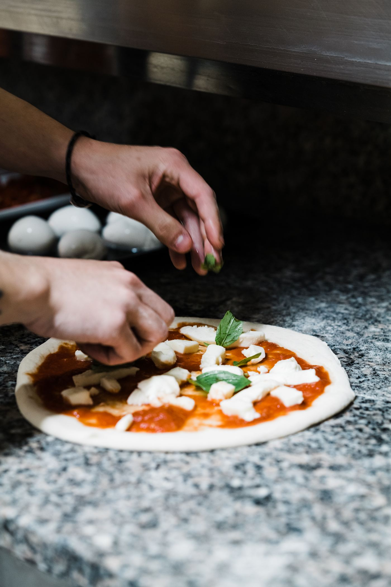
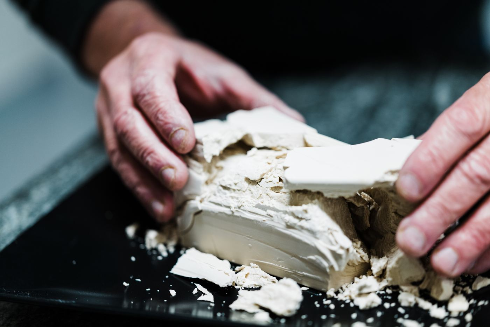
La régularité du grammage se voit à l'œil une fois le geste installé.
La recette écrite, avec ses allergènes. Le document qu'un contrôle demande.
Le pâton
Nom du produit : pâton à pizza ·
Type : pâte levée traditionnelle ·
Quantité finale : 6 pâtons de 280 g (1,68 kg de pâte)
Ingrédient
Quantité
Remarques
Farine type 00
1 000 g
Riche en gluten et en protéines
Eau
620 ml
Froide, environ 18 °C
Sel fin
20 g
Dissous dans l'eau
Levure fraîche
3 g
Diluée dans un peu d'eau tiède
Huile d'olive
25 g
En fin de pétrissage
620 ml, soit 62 % d'hydratation
Le chapitre « L'eau » donne 54 à 60 % pour
un empâtement direct. Cette fiche est donc au-dessus de la plage annoncée —
ce qui se défend sur une farine type 00 très forte et une maturation longue, mais mérite
d'être dit. ⚑ valeur à confirmer — Jean-Jacques
Empâtement direct
Mélange initial : verser l'eau froide dans le pétrin, ajouter la farine progressivement, mélanger 2 mn
Incorporation : ajouter la levure, pétrir 10 à 12 mn ; verser le sel, pétrir 30 s à 1 mn ; ajouter l'huile
Pétrissage : jusqu'à disparition des traces d'huile et obtention d'une pâte lisse, souple et homogène — température finale 23 à 25 °C
Nom du produit : pizza Margherita ·
Type : pizza classique, base tomate ·
Quantité finale : 1 pizza Ø 29 cm (env. 280 g de pâte crue)
Ingrédient
Quantité
Remarques
Pâte à pizza
280 g
Pâton — voir fiche technique précédente
Pulpe fine de tomate
100 g
Assaisonnée : sel, huile, basilic
Mozzarella
100 g
Égouttée, tranchée ou en brins
Huile d'olive extra vierge
5 g
Filet avant ou après cuisson
Feuilles de basilic frais
4 feuilles
À ajouter après cuisson
Étaler
Étaler le pâton sur un plan fariné jusqu'à 29 cm de diamètre.
Garnir
Garnir avec la pulpe de tomate assaisonnée, puis répartir uniformément la mozzarella.
Cuire
Cuire dans un four à pizza à 340 – 360 °C pendant 3 à 4 mn.
Finir
À la sortie du four, ajouter un filet d'huile d'olive et les feuilles de basilic.
Allergènes présents
Gluten (farine de blé) · Lait (mozzarella) ·
traces possibles de fruits à coque selon l'environnement de fabrication.
100 g de tomate pour un Ø 29
Le tableau des quantités donne 90 g de sauce
et 80 à 100 g de mozzarella pour ce diamètre. L'écart est faible mais réel :
aligner l'un sur l'autre. ⚑ à trancher
La dernière ligne, « total prix au kilo », est la
seule qui compte pour fixer un prix de vente. Un pâton de 280 g ne coûte que quelques
dizaines de centimes : c'est la garniture qui fait le prix de revient, et c'est elle
qu'il faut chiffrer.
Fabriquer des pizzas artisanalesLes conseils du cuisinier
25
Les conseils du cuisinier
Charcuteries et viandes : comment les préparer pour qu'elles tiennent la cuisson.
Le jambon
Qualité
Comment le poser
Premier prix ou gamme moyenne
En chiffonnade (fines tranches), sous le fromage de recouvrement (mozzarella, emmental, comté). Il ne sèchera pas à la cuisson et donnera du volume à la pizza.
Jambon de qualité nature, aux herbes, à la truffe…
Il est impératif de le mettre en valeur : toujours en chiffonnade, et déposé à la sortie du four.
Les lardons allumettes
Les poser crus sur la pizza en début de cuisson.
S'ils sont trop salés ou trop gras : les blanchir 1 mn, bien
égoutter, laisser refroidir et stocker au frais dans un bac hermétique.
La bolognaise
1 kg de viande · 3 oignons
Dans une sauteuse, faire revenir les oignons émincés dans un filet d'huile d'olive.
Ajouter la viande hachée et remuer pour faire suer ; cuire environ 20 mn
à feu moyen. Saler et poivrer, verser un cinquième de tomate aromatisée ou concassée, ajouter
un bouquet garni selon le goût et laisser cuire à petit feu 30 mn. Rectifier
l'assaisonnement.
Conservation
Réserver au frais entre 2 et 4 °C,
48 heures maximum, dans un bac hermétique.
Le magret de canard (+ 400 g)
Quadriller le côté gras au couteau. Mettre les magrets côté gras dans une poêle bien
chaude afin de faire fondre le gras au maximum ; laisser saisir 2 mn
pour que la peau soit bien dorée. Retourner côté viande, cuire environ 1 mn,
saler, poivrer et faire des allers-retours pendant 7 à 8 mn. À mi-cuisson,
sortir l'excédent de graisse pour finir sur une cuisson rosée.
Laisser refroidir, réserver au froid en bacs hermétiques, puis passer au trancheur
(3 à 4 mm). Disposer les tranches froides sur la pizza en
fin de cuisson, avec ou sans sauce.
Fabriquer des pizzas artisanalesLes conseils du cuisinier
Le filet de volaille
Émincer les filets en lamelles d'environ 1 cm, mettre dans un récipient
en assaisonnant selon le goût. Ajouter un filet d'huile d'olive, mélanger et réserver en
chambre froide. Laisser mariner 24 heures et disposer
cru sur la pizza, avant la cuisson.
Poulet aux épices — 1 kg de filet
12 g de sel · 2 g de poivre
25 g d'épices
80 g d'eau
Poulet persillé — 1 kg de filet
12 g de sel · 2 g de poivre
80 g de persillade
50 g d'huile d'olive
La sauce tomate
Ingrédient
Poids
Tomate concassée ou en pulpe
10 kg
Sel
120 g
Huile d'olive
120 g
Basilic frais
120 g
Origan (facultatif)
8 g
Sucre (facultatif)
40 à 80 gsuivant l'acidité et le goût
Verser la tomate dans un fût avec couvercle. Ajouter le basilic haché, l'huile d'olive et
le sel, mélanger ; si l'acidité est trop marquée, ajouter le sucre et remélanger.
Réserver au frais. Conservation : 3 jours.
Le cocktail de fruits de mer surgelés
1 kg de fruits de mer · persillade · sel · poivre · huile d'olive
Mettre à ébullition 1 litre d'eau. Dès le frémissement, verser le cocktail
décongelé de la veille. Laisser chauffer 1 mn environ,
sans amener à ébullition. Bien égoutter, ajouter la persillade, l'huile,
le sel et le poivre. Laisser refroidir et réserver en bac hermétique au frais.
Fabriquer des pizzas artisanalesLes conseils du cuisinier
Le thon
Thon rouge frais — couper en fines tranches. Il peut être macéré dans
une préparation de tomate, poivron, oignon.
Thon en boîte (entier ou miettes, albacore) — de qualité moyenne par
rapport au thon rouge. Il peut être mélangé cru avec des petits légumes en dés, façon
niçoise, et posé sur la pizza en fin de cuisson.
Les champignons de Paris
Choisir des champignons très frais, en bouchons, fermes. Les nettoyer au papier absorbant
— ou les passer rapidement sous l'eau sans les faire tremper — les émincer
et les réserver en bac hermétique au frais.
L'astuce anti-noircissement
Pour les garder plusieurs jours, les
tasser sans trop les abîmer : moins de contact avec l'air, moins
d'oxydation.
Les pommes de terre
Utiliser des pommes de terre fraîches avec la peau. Bien les laver en les
frottant, les cuire à la vapeur ou à l'eau sans les saler, bien égoutter,
stocker en bacs hermétiques après refroidissement et réserver au froid. Avant le service,
peler et couper en rondelles ou en cubes la quantité juste nécessaire.
Une fois pelées
Les pommes de terre déjà pelées ne se gardent que
1 à 2 jours au frais.
Les poivrons
Utiliser des poivrons frais, les laver et les sécher. Brûler la peau au chalumeau, sur la
flamme, ou au four avec les résistances supérieures seules. Quand la peau a cloqué et noirci,
la décoller au couteau d'office, retirer les pépins et les membranes blanches, puis tailler
en lanières ou en brunoise.
L'ananas
Peler l'ananas frais et faire de fines tranches en carpaccio — le trancheur est souhaité.
Réserver au frais.
Deux détails
Disposer le carpaccio d'ananas à la sortie du
four. Et bien enlever les petits yeux disposés tout autour : ils sont durs et
se remarquent immédiatement en bouche.
Fabriquer des pizzas artisanalesLe matériel dans une pizzeria
26
Le matériel dans une pizzeria
Le gros matériel — celui qui décide de l'implantation et du budget.
Four
Tour réfrigéré 40 × 60 cm ou GN 1/1 (dimensions des bacs à pâtons)
Vitrine réfrigérée
Lave-mains fémoral
Pétrin
Plan de travail
Trancheur
Robot coupe-légumes
Plonge batterie et légumes
Congélateur
Chambre froide
Armoire réfrigérée 40 × 60 cm
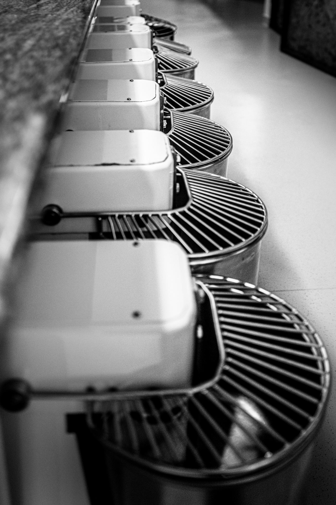
À prévoir en plus
Pizzeria à emporter et
distributeur à pizzas : cellule de refroidissement et échelle. Sans
cellule, on ne peut pas refroidir assez vite pour respecter la chaîne du froid, et le
distributeur n'est pas envisageable.
Fabriquer des pizzas artisanalesL'organisation en pizzeria
27
L'organisation en pizzeria
« C'est comme un chef d'orchestre avant l'ouverture du rideau. »
La mise en place
C'est la règle essentielle avant l'ouverture : tout doit être prêt, dans des bacs
gastro réfrigérés.
Les charcuteries tranchées
Les fromages tranchés et/ou coupés
Les viandes taillées et/ou émincées et assaisonnées, crues ou cuites
Les légumes lavés, taillés et/ou émincés et assaisonnés, crus ou cuits
Pour l'épicerie : origan, olives, crème balsamique, confitures, fruits secs…
Les cartons déjà pliés et stockés dans un endroit sec
Le conseil
Toute la mise en place sera stockée en bacs hermétiques ou sous
vide — attention au PEPS : premier entré, premier sorti. Une partie
sera déposée dans les bacs inox pour le service, face au plan de travail, et rechargée au
fur et à mesure des besoins.
Les pâtons
Les pâtons sont sortis à l'avance pour qu'ils soient à bonne température,
15 à 18 °C : c'est ce qui donne la facilité d'étalage et une bonne
levée de la pâte à la cuisson.
En face du poste de fabrication
La sauce tomate avec la louche
Les crèmes et le miel, stockés dans les biberons
La mozzarella ou l'emmental
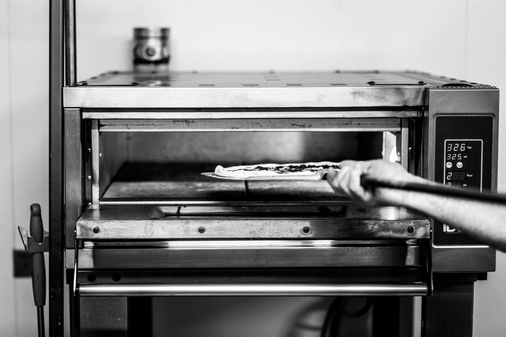
Le poste de cuisson : tout ce qui est utile est à portée de bras, rien d'autre n'est là.
Fabriquer des pizzas artisanalesLa cuisson de la pizza
28
La cuisson de la pizza
Trois chaleurs travaillent en même temps. Savoir laquelle domine, c'est savoir régler son four.
La température idéale varie entre 320 et 450 °C
Type de pizza
Température du four
Classique
320 – 360 °C
Contemporaine
360 – 380 °C
Napolitaine
400 – 450 °C
Plaque
320 °C
Les trois chaleurs
Rayonnement
La chaleur se diffuse par la voûte du four vers la pizza, sans
contact. C'est elle qui colore et qui déclenche la réaction de Maillard.
Convection
La chaleur se diffuse par l'air chaud qui tourne naturellement dans
la chambre vers la pizza. C'est elle qui cuit la garniture.
Conduction
La chaleur se diffuse de la sole — le sol du four — par contact
direct avec la pizza. C'est elle qui cuit le fond et fait le croustillant.
Un fond pâle, une garniture brûlée
Ce n'est pas un problème de temps, c'est
un problème d'équilibre : trop de voûte, pas assez de sole. Sur un four digital, on
corrige par la répartition ; sur un four mécanique, en descendant la voûte et en montant la
sole de quelques degrés.
Bois, gaz, électrique, hybride, convoyeur. Chaque énergie a son contrat.
Les fours à bois
D'un point de vue commercial, le four à bois a toujours été un gage de qualité par
rapport à un four électrique. Le temps de cuisson est très rapide et idéal pour la
napolitaine et la contemporaine. Le four garde sa chaleur pour le lendemain.
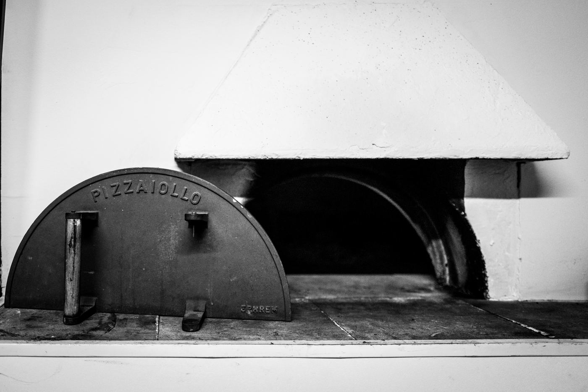
Avantages
Cuisson très rapide, idéale napolitaine et contemporaine
Garde sa chaleur pour le lendemain
Argument commercial fort
Inconvénients
Sécurité des locaux
Sorties de fumées avec conduit isolé réglementé
Ramonage 2 fois par an — facture à l'appui pour l'assurance
Qualité du bois (séchage) et son stockage
Modèle
Ce qui le caractérise
Four à bois traditionnel
Capacité de 2 à 5 pizzas suivant le diamètre. On en trouve bâtis ou en kit.
Four à bois à sole rotative
L'évolution du traditionnel : gain de place (le foyer est sur le côté de la sole) et plus besoin de faire tourner les pizzas dans le four.
Il existe des fours à gaz pour enfourner 4 à 6 pizzas à la fois par
chambre ; il peut y avoir une ou deux chambres superposées. Mêmes caractéristiques que
les fours électriques.
Modèle
Ce qui le caractérise
Four à gaz à sole rotative
Même évolution que pour le bois : gain de place, plus de rotation des pizzas.
Four hybride
Fonctionnement bois et gaz. Ces énergies ne peuvent être utilisées que simultanément, en gardant les caractéristiques des deux.
Four convoyeur
Évite les rotations, cuisson parfaite et uniforme. Souvent utilisé par les chaînes et les franchises, et pratique pour une cuisson à 80 % destinée aux distributeurs à pizzas.
Les fours électriques
Il existe des fours électriques pour enfourner 4, 6 ou 9 pizzas à la fois
par chambre ; il peut y avoir une ou deux chambres superposées.
Commande
Ce que cela change
Digitale
Réglage beaucoup plus précis suivant les modes et les temps de cuisson (classique ou teglia). Fours plus récents, excellente isolation.
Mécanique
Réglage simple à deux boutons, affichage de 1 à 10 : températures moins précises. Ancienne génération, moins bien isolée donc consommation plus forte. Prix plus attractifs.
Sole rotative
La nouveauté et l'avenir : gain de temps (plus de rotation dans la chambre), cuissons fiables et régulières.
Le même produit, à trois couples voûte/sole différents. Plus on monte, plus on va
vite — mais moins on a de marge d'erreur.
Fours électriques — trois couples de température
Voûte
Sole
Temps de cuisson
Réglage doux
320 °C
290 °C
5 mn
Réglage moyen
340 °C
300 °C
4 mn
Réglage rapide
360 °C
310 °C
3 mn 30
Choisir son réglage selon le service
Le réglage rapide n'est pas
« meilleur » : il ne pardonne rien. En début d'apprentissage, ou sur un service calme,
le réglage doux laisse le temps de corriger une pizza mal placée. On monte en température
quand le geste est sûr et que le rush l'impose.
Trois familles, trois vitesses, trois façons de construire le réseau gluténique.
Le pétrin à spirale — à tête fixe ou relevable
Il permet de travailler des quantités de pâte de 10 à 60 kg. Sa vitesse
est plus rapide que celle des pétrins à bras plongeants ou à axe oblique.
L'échauffement de l'empâtement dû à cette vitesse est donc accentué et demande
plus de précision dans les temps de pétrissage, qui sont forcément plus
courts. Du fait de sa vitesse, il accélère la formation du réseau gluténique :
l'empâtement est plus lisse, avec une mie plus régulière.
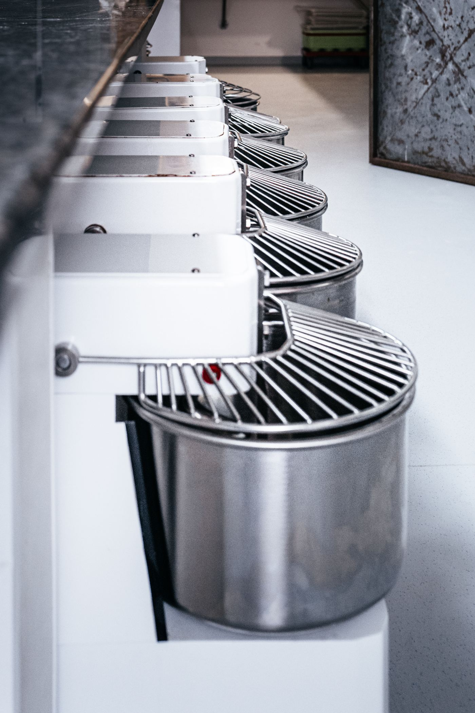
Tête
Ce que cela change
Fixe
Plus contraignant pour sortir la pâte du pétrin et pour le nettoyage.
Relevable
Plus de facilité à sortir la pâte, possibilité d'enlever la cuve pour l'entretien. Plus onéreux.
Le pétrin à axe oblique
Il permet de travailler des quantités de 10 à 80 kg. Sa vitesse est
deux fois plus lente que celle du pétrin à spirale. Les bras soulèvent la
pâte et l'oxygènent davantage, ce qui développe une mie très aérée. Entretien facile, mais
il prend beaucoup de place.
Le pétrin à bras plongeants
Il permet de travailler de 50 à 150 kg. Il reproduit au plus près les
gestes du pizzaïolo. Le développement du réseau gluténique est plus rapide qu'à l'axe oblique
et plus lent qu'à la spirale. Il permet un brassage beaucoup plus aéré, donc une mie plus
développée. Son entretien est plus difficile et il prend plus de place : il est
conseillé pour de gros volumes.
Le pétrin de l'école
Tous les protocoles de ce manuel sont écrits pour un
pétrin à spirale de 10 à 30 litres, celui de vos postes. Sur un axe oblique
ou des bras plongeants, les temps de pétrissage sont à rallonger — la vitesse n'est pas la
même, le réseau met plus longtemps à se construire.
Les mots du métier, tels qu'ils sont employés pendant la formation.
A
Abaisser :
Technique manuelle ou mécanique d'étirement de la pâte pour former la pizza (l'abaisse).
Aérobie :
Se dit de micro-organismes qui ne peuvent vivre qu'en présence d'oxygène.
Alvéographe de Chopin :
Extensimètre qui détermine le comportement mécanique d'une pâte de farine, sa « force boulangère ». Il la déforme par pression d'air pour mesurer la ténacité, l'extensibilité, l'élasticité et la force (W).
Amande :
Le cœur du grain de blé, ce qui est écrasé pour faire la farine. Elle représente 81 à 88 % de son poids.
Amidon :
L'élément principal d'une farine. Glucide complexe présent entre 64 et 80 % de la composition totale.
Amylases :
Enzymes qui participent à la décomposition de l'amidon de la farine.
Anaérobie :
Se dit de micro-organismes qui vivent sans oxygène.
Autolyse :
Technique boulangère qui consiste à mélanger la farine et l'eau avec un temps de repos après le frasage, afin d'obtenir une pâte non homogène plus extensible.
B
Bac à pâtons :
Caisse plastique de différentes tailles qui sert à stocker les pâtons pour les laisser reposer avant la fabrication des pizzas.
Bassinage :
Eau ajoutée en petits filets en fin de pétrissage pour corriger la texture sans casser le réseau déjà formé.
Biga :
Empâtement indirect, levain-levure solide composé de farine, d'eau et de levure. Elle apporte des arômes, de la digestibilité et du croustillant à la pâte.
Blé :
Céréale de la famille Triticum. Le mot désigne aussi le grain (caryopse) produit par ces plantes. Il peut être tendre ou dur.
Boulage :
Technique manuelle ou mécanique pour réaliser des petites boules de pâte (pâtons), destinées à la fabrication de la pizza.
C
Conduction :
Transmission de la chaleur par contact direct avec une surface chaude (la sole).
Convection :
Transmission de chaleur par une source chaude qui chauffe l'air dans une chambre de cuisson.
Corne :
Ustensile en forme de demi-lune qui permet de décoller la pâte pour faciliter sa manipulation.
Corniche :
Partie extérieure de la pâte qui gonfle pendant la cuisson (aussi appelée trottoir, ou cornicione en italien).
Coupe-pâte :
Ustensile qui permet de couper la pâte lors de la fabrication.
Couvrir :
Protéger la pâte lors de son repos pour éviter le séchage.
Cul-de-poule :
Récipient en inox ou en verre, demi-sphérique, pour les préparations.
D
Dessiccation :
Qui absorbe l'humidité d'un corps.
Détente :
Phase de repos de la pâte avant les rabats. Elle permet au réseau de gluten de se former : la pâte devient plus élastique.
F
Façonnage :
Mise en forme du pâton pour réaliser un disque.
Farine :
Poudre obtenue par la mouture des grains de céréales.
Fermentation :
Réaction naturelle obtenue par le mélange des ingrédients, qui permet et participe au développement de la pâte à pizza.
Fleurage :
Fine couche de farine d'étalage ou de semoule extra-fine déposée sur le plan de travail, qui favorise la glisse au moment de placer la pizza sur la pelle.
Indice qui classe les farines suivant la qualité du blé. Il est mesuré à l'alvéographe de Chopin.
Frasage :
Première étape du pétrissage : mélanger lentement et grossièrement la farine, l'eau et la levure.
G
Garnir :
Confectionner la pizza en déposant les ingrédients choisis.
Glucose :
Sucre simple, principal glucide du métabolisme de l'amidon (transformé par l'amylase).
Gluten :
Substance composée de protéines qui subsiste après l'élimination de l'amidon dans la farine. Elle forme, avec l'eau, le réseau qui retient le gaz.
H
Hydratation :
Quantité de liquide (eau, huile) à l'intérieur de la pâte, mesurée en pourcentage du poids de farine.
Hygroscopique :
Qui absorbe l'humidité de l'air.
I
Indirect :
Empâtement en deux étapes, avec une pré-fermentation avant le pétrissage final (Poolish, Biga).
Ingrédient :
Élément qui entre dans la composition d'une recette.
L
Laminoir :
Appareil mécanique qui sert à étaler une pâte à pizza de façon homogène.
Levain naturel :
Écosystème microbien issu du mélange de farine et d'eau, qui permet de faire lever une pâte. Il peut être liquide ou solide.
Levure :
Champignon unicellulaire apte à provoquer la fermentation des matières organiques.
Lipides :
Avec les glucides et les protéines, l'un des trois nutriments de base. Ils regroupent les corps gras non solubles dans l'eau.
M
Maille glutineuse :
Formée par le gluten et l'eau lors du pétrissage. Elle retient le gaz et permet le développement de la pâte par son extensibilité.
P
Panifiable :
Se dit des farines qui, comme celle du blé, contiennent assez de gluten pour que la pâte lève.
Panification :
L'ensemble des étapes de fabrication qui mènent au résultat final, la pâte.
Pâton :
Morceau de pâte façonné en boule pour faire une pizza.
Pétrin :
Appareil mécanique qui sert à pétrir la pâte. Plusieurs modèles : à bras plongeants, à spirale, à axe oblique.
Pétrissage :
Malaxage de l'ensemble des éléments afin d'obtenir l'homogénéisation de la pâte.
Pizza in teglia / al taglio :
Pizza romaine vendue en plaque, au poids ou à la part.
Pizza napolitaine :
Pizza originaire de Naples, au rebord marqué (cornicione). La véritable napolitaine répond aux critères de la STG (Spécialité traditionnelle garantie).
Pointage :
Première phase de fermentation de la pâte, en masse, à température ambiante.
Poolish :
Empâtement indirect, levain-levure liquide composé d'eau et de farine à quantités égales et de levure. Méthode qui augmente la digestibilité de la pâte.
Protocole :
Descriptif technique qui énonce les conditions, les règles et l'ensemble des étapes de fabrication de la pâte (la recette).
R
Rabat :
Geste qui consiste à replier la pâte sur elle-même plusieurs fois pour lui donner de la force et l'oxygéner.
Rafraîchir :
Apporter de l'eau et de la farine pour nourrir un levain naturel et le garder en vie.

 Version 2.0
Version 2.0